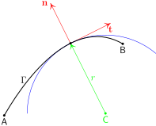

Appendix A — Rappels de géométrie différentielle
\[ \DeclareMathOperator{\asym}{\symbfsf{asym}} \newcommand{\altvec}[1]{\overrightarrow{#1}} \newcommand{\D}{{\mathrm d}} \newcommand{\dbldot}{\mathbin{\mathord{:}}} \let\div\undefined \newcommand{\div}{\operatorname{div}} \newcommand{\tdiv}{\operatorname{\symbfsf{div}}} \newcommand{\Div}{\operatorname{Div}} \newcommand{\external}{\mathrm{ext}} \newcommand{\Eta}{\mathrm{H}} \newcommand{\Grad}{\operatorname{Grad}} \newcommand{\grad}{\operatorname{grad}} \newcommand{\tgrad}{\operatorname{\symbfsf{grad}}} \newcommand{\tGrad}{\operatorname{\symbfsf{Grad}}} \newcommand{\internal}{\mathrm{int}} \newcommand{\KL}{\mathrm{KL}} \newcommand{\kl}{\mathrm{kl}} \newcommand{\PI}{\symup{\pi}} \newcommand{\point}[1]{\symsf{#1}} \newcommand{\power}{\mathcal{P}} \newcommand{\reals}{\mathbb R} \newcommand{\Span}{\operatorname{Vect}} \newcommand{\sym}{\operatorname{\symbfsf{sym}}} \newcommand{\tens}[1]{\symbfsf{#1}} \newcommand{\tr}{\operatorname{tr}} \newcommand{\transpose}{\mathsf{T}} \renewcommand{\vec}[1]{\symbf{#1}} \]
A.1 Courbes paramétrées
A.1.1 Définition
Une courbe paramétrée \(\Gamma\) du plan \(\reals^2\) ou de l’espace \(\reals^3\) est l’ensemble des points \(\point{M} = \point{f}(t)\) de \(\reals^d\) (\(d = 2, 3\)) images par l’application \(\point{f} \colon [a, b] \longrightarrow \reals^d\), du paramètre réel \(a \leq t \leq b\) (voir Figure fig-20230207150452) \[ \Gamma = \bigl\{ \point{M} \in \reals^d | \exists t \in [a, b]: \point{M} = \point{f}(t) \bigr\}. \]
On supposera dans ce qui suit l’application \(\point{f}\) suffisamment régulière (en général, au moins une fois continûment dérivable par morceaux) pour que toutes les relations faisant intervenir \(\point{f}\) et ses dérivées aient un sens. En particulier, l’application \(\point{f}\) est continue: la courbe décrite par \(\point{f}\) dans \(\reals^d\) est donc elle-même continue au sens usuel du terme : on trace cette courbe sans lever le crayon.
Le choix du paramétrage \(t \mapsto \point{f}(t)\) définit naturellement une orientation de la courbe \(\Gamma\), de son origine \(\point{A} = \point{f}(a)\) vers son extrémité \(\point{B} = \point{f}(b)\). Toute application \(\Phi\colon [a', b'] \longleftrightarrow [a, b]\) strictement croissante et régulière permet de définir le nouveau paramétrage \(\point{f} \circ \Phi\) de la courbe \(\Gamma\). Dans ce changement de paramètre, l’orientation de la courbe est préservée.
Dans le plan (\(d = 2\)) et dans l’espace (\(d = 3\)), respectivement, l’application \(\point{f}\) est définie par les équations paramétriques \((x(t), y(t))\) et \(x(t), y(t), z(t)\), respectivement, de la courbe \(\Gamma\) \[ \point{f}(t) = \begin{bmatrix} x(t) \\ y(t) \end{bmatrix} \quad \text{et} \quad \point{f}(t) = \begin{bmatrix} x(t) \\ y(t) \\ z(t) \end{bmatrix}. \]
A.1.2 Tangente
Notion intuitive : soit \(\point{M} = \point{f}(t) \in \Gamma\) fixé. On considère le point \(\point{M'} = \point{f}(t')\), voisin de \(\point{M}\). La droite \((\point{MM}')\) définit une sécante à la courbe \(\Gamma\). Lorsque \(\point{M}'\) « se rapproche de \(\point{M}\) » (voir Figure fig-20230207155607 ), cette sécante se rapproche de la tangente à \(\Gamma\) en \(\point{M}\) qui est donc définie comme la droite passant par \(\point{M}\) et de vecteur directeur \[ \lim_{t' \to t} \frac{\altvec{\point{MM}'}}{t' - t} = \lim_{t' \to t} \frac{\point{M'} - \point{M}}{t' - t} = \dot{\point{f}}(t), \] où le point désigne la dérivée par rapport au paramètre \(t\). Le vecteur \(\dot{\point{f}}(t)\) est donc un vecteur tangent au point \(\point{f}(t)\) de la courbe \(\Gamma\).

On vérifie aisément que la droite tangente ainsi définie est invariante par changement de paramètre.
Les coordonnées du vecteur tangent, sont en dimensions 2 et 3, respectivement \[ \dot{\point{f}}(t) = \begin{bmatrix} \dot{x}(t) \\ \dot{y}(t) \end{bmatrix} \quad \text{et} \quad \dot{\point{f}}(t) = \begin{bmatrix} \dot{x}(t) \\ \dot{y}(t) \\ \dot{z}(t) \end{bmatrix}. \]
A.1.3 Rectification d’une courbe
On cherche à calculer la longueur de l’arc \(\point{AB}\). À cet effet, on approxime l’arc par une ligne polygonale \(\point{M}_0 = \point{A}, \point{M_1}, \ldots, \point{M_n} = \point{B}\), où \(\point{M}_k\) est le point de \(\Gamma\) d’antécédent \(t_k\) par \(\point{f}\) (\(t_0 < t_1 < \cdots < t_n\)). La longueur de cette ligne polygonale est (voir Figure fig-20230207181908)
\[ \sum _ {k = 0} ^ {n - 1} \bigl \lVert \point{M} _ {k+1} - \point{M} _ k \bigr \rVert = \sum _ {k = 0} ^ {n - 1} \bigl \lVert \point{f}(t _ {k+1}) - \point{M}(t _ k) \bigr \rVert \]
Si les points \(\point{M}_k\) sont suffisamment rapprochés, on peut remplacer la sécante par la tangente \[ \sum _ {k = 0} ^ {n - 1} \bigl \lVert \point{M} _ {k+1} - \point{M} _ k \bigr \rVert \simeq \sum _ {k = 0} ^ {n - 1} \bigl \lVert \dot{\point{f}}(t _ k) \bigr \rVert \, \bigl ( t _ {k+1} - t _ k \bigr) \] et la somme discrète par une intégrale \[ \sum _ {k = 0} ^ {n - 1} \bigl \lVert \point{M} _ {k+1} - \point{M} _ k \bigr \rVert \simeq \int _ {a} ^ {b} \bigl \lVert \dot{\point{f}}(t) \bigr \rVert \, \D t. \]
L’intégrale ci-dessus est la longueur de l’arc \(\point{AB}\) tracé sur la courbe \(\Gamma\) \[ \mathcal{L} _ \Gamma(\point{A}, \point{B}) = \int _ {a} ^ {b} \bigl \lVert \dot{\point{f}}(t) \bigr \rVert \, \D t. \tag{A.1}\]
On vérifie aisément que cette expression est invariante par changement de paramètre.
On peut de même mesurer pour tout point \(\point{M}\) situé entre \(\point{A}\) et \(\point{B}\), la longueur de l’arc \(\point{AB}\) : c’est l’abscisse curviligne \(s\) du point \(\point{M}\), l’origine étant fixée en \(\point{A}\) : \(s = \mathcal{L}_\Gamma(\point{A}, \point{M})\). On définit ainsi une application \(\Psi \colon [a, b] \longrightarrow [0, L]\) \[ s = \Psi(t) = \int_a^t \bigl \lVert \dot{\point{f}}(u) \bigr \rVert \, \D u. \]
La fonction ainsi définie étant croissante et suffisamment régulière, elle est inversible : \(t = \Phi(s)\). L’application \(\point{f} \circ \Phi\) définit un paramétrage particulier de la courbe par l’abscisse curviligne \(s\). On dit qu’on a rectifié la courbe \(\Gamma\).
La définition (eq-20230207112239) est algébrique. Plus précisément, si on choisit pour origine des abscisses curvilignes le point \(\point{C}\) de paramètre \(c\) (\(a < c < b\)), alors l’abscisse curviligne \(\int_c^t \lVert \dot{\point{f}}(t) \rVert \, \D t\) du point \(\point{M} = \point{f}(t)\) est négative si \(\point{M}\) est entre \(\point{A}\) et \(\point{C}\) (\(a \leq t \leq c\)), et positive si \(\point{M}\) est entre \(\point{C}\) et \(\point{B}\) (\(c \leq t \leq b\)).
A.1.4 Vecteur tangent unitaire
On suppose la courbe \(\Gamma\) rectifiée, et on note \(s \mapsto \point{f}(s)\) le paramétrage associé. Le vecteur \(\vec{t} = \point{f}'(s)\) est tangent à \(\Gamma\) au point \(\point{M} = \point{f}(s)\) (voir @).

On vérifie aisément que ce vecteur est unitaire. En effet, la longueur de l’arc \(\point{AM}\) tracé sur \(\Gamma\) s’écrit \[ \mathcal{L}_\Gamma(\point{A}, \point{M}) = \int_a^s \bigl \lVert \dot{\point{f}}(u) \bigr \rVert \, \D u. \] où le paramètre est l’abscisse curviligne \(s\), qui est par définition égale ) \(\mathcal{L}_\Gamma(\point{A}, \point{M})\). On a donc, pour tout \(s\) \[ s = \int_a^s \bigl \lVert \dot{\point{f}}(u) \bigr \rVert \, \D u, \] d’où il résulte que \(\lVert \vec t \rVert = 1\). Le vecteur \(\vec t\) est le vecteur tangent unitaire à la courbe \(\Gamma\) au point \(\point{M}\). Il sera parfois commode de repérer ce vecteur par l’angle \(\theta\) qu’il fait par rapport à une direction fixe arbitraire (typiquement, \(\vec e_x\)) \[ \vec t(s) = \cos \theta(s) \, \vec e_x + \sin \theta(s) \, \vec e_y. \tag{A.2}\]
A.2 Courbure des courbes planes
Dans ce paragraphe, on considère le cas d’une courbe plane (\(d = 2\)), dont on définit la courbure. Les résultats présentés peuvent être étendus aux courbes gauches (\(d = 3\)) en introduisant également la notion de torsion, dont nous n’aurons pas besoin dans ce cours.
Le vecteur tangent \(\vec t\) unitaire étant défini en tout point de la courbe, on peut également définir le vecteur normal unitaire \(\vec n\), qui lui est perpendiculaire.
Deux orientations sont possibles pour le vecteur \(\vec n\). Il est important de remarquer qu’il n’y a pas de choix canonique : il sera donc toujours nécessaire de préciser l’orientation de la normale.
A.2.1 Première formule de Frénet
Au point \(\point{M}\) de la courbe \(\Gamma\), le vecteur \(\vec{t}\) défini au §sec-20230207114551 est unitaire. Sa dérivée \(\vec{t}'\) lui est perpendiculaire. En effet \[ \vec t \cdot \vec t = 1 \quad \text{donc} \quad 0 = \frac{\D}{\D s} \bigl( \vec t \cdot \vec t \bigr) = 2 \vec t \cdot \vec t'. \]
En d’autres termes, \(\vec t'\) est porté par \(\vec n\). On introduit le scalaire \(\kappa\) tel que \[ \vec t' = \frac{\D \vec{t}}{\D s} = \kappa \, \vec n \] (première formule de Frénet). \(\kappa\) est homogène à l’inverse d’une longueur. C’est la courbure de \(\Gamma\) en \(\point{M}\). Son inverse, \(r = \kappa^{-1}\) est le rayon de courbure. On montre en effet que le cercle de centre \(\point{M} + r \, \vec{n}\) et de rayon \(\lvert r \rvert\) est celui qui approche le mieux la courbe \(\Gamma\) au voisinage de \(\point{M}\) (cercle osculateur).
La courbure est une grandeur algébrique, dont le signe n’est pas intrinsèque : il dépend de l’orientation de la normale \(\vec n\), qui est arbitraire. En effet, changer \(\vec n\) en \(-\vec n\) conduit à remplacer la courbure \(\kappa\) par son opposé \(-\kappa\).
Les vecteurs \(\kappa \, \vec n\) et \(r \, \vec n\) sont quant à eux bien intrinsèques. Ils pointent vers le centre de courbure.
Traiter l’exemple du cercle en cours
A.2.2 Deuxième formule de Frénet
Par construction, le vecteur normal unitaire \(\vec n\) est de norme constante : sa dérivée lui est donc perpendiculaire, et \(\vec n'\) est parallèle à \(\vec t\). On introduit le scalaire \(\alpha\) tel que \(\vec n' = \alpha \, \vec t\). Comme \(\vec t\) et \(\vec n\) sont perpendiculaires, on a \(\vec t \cdot \vec n = 0\), soit, en dérivant \[ 0 = \vec t' \cdot \vec n + \vec t \cdot \vec n' = \kappa \, \vec n \cdot \vec n + \alpha \, \vec t \cdot \vec t = \kappa + \alpha \] et \(\alpha = -\kappa\). On a ainsi obtenu la deuxième formule de Frénet \[ \vec n' = \frac{\D \vec{n}}{\D s} = -\kappa \, \vec t. \]
A.2.3 Lien avec la direction de la tangente
L’angle \(\theta(s)\) a été défini plus haut par la relation (eq-20230207121436). En dérivant cette relation, on obtient \[ \kappa \, \vec n = \vec t' = \theta'(s) \, \bigl[ -\sin \theta(s) \, \vec e_x + \cos \theta(s) \, \vec e_y \bigr] \]
Le vecteur entre crochets est un vecteur unitaire, directement perpendiculaire à \(\vec t\). Donc
- \(\kappa = \theta'\) si \((\vec t, \vec n)\) est une base directe,
- \(\kappa = -\theta'\) si \((\vec n, \vec t)\) est une base directe.
/ /MathJax.js Copyright (c) 2009-2018 The MathJax Consortium Licensed under the Apache License, Version 2.0 (the “License”); * you may not use this file except in compliance with the License. * You may obtain a copy of the License at http://www.apache.org/licenses/LICENSE-2.0 Unless required by applicable law or agreed to in writing, software * distributed under the License is distributed on an “AS IS” BASIS, * WITHOUT WARRANTIES OR CONDITIONS OF ANY KIND, either express or implied. * See the License for the specific language governing permissions and * limitations under the License. */
if(document.getElementById&&document.childNodes&&document.createElement){if(!(window.MathJax&&MathJax.Hub)){if(window.MathJax){window.MathJax={AuthorConfig:window.MathJax}}else{window.MathJax={}}MathJax.isPacked=true;MathJax.version=“2.7.9”;MathJax.fileversion=“2.7.9”;MathJax.cdnVersion=“2.7.9”;MathJax.cdnFileVersions={};(function(d){var b=window[d];if(!b){b=window[d]={}}var e=[];var c=function(f){var g=f.constructor;if(!g){g=function(){}}for(var h in f){if(h!==“constructor”&&f.hasOwnProperty(h)){g[h]=f[h]}}return g};var a=function(){return function(){return arguments.callee.Init.call(this,arguments)}};b.Object=c({constructor:a(),Subclass:function(f,h){var g=a();g.SUPER=this;g.Init=this.Init;g.Subclass=this.Subclass;g.Augment=this.Augment;g.protoFunction=this.protoFunction;g.can=this.can;g.has=this.has;g.isa=this.isa;g.prototype=new this(e);g.prototype.constructor=g;g.Augment(f,h);return g},Init:function(f){var g=this;if(f.length===1&&f[0]===e){return g}if(!(g instanceof f.callee)){g=new f.callee(e)}return g.Init.apply(g,f)||g},Augment:function(f,g){var h;if(f!=null){for(h in f){if(f.hasOwnProperty(h)){this.protoFunction(h,f[h])}}if(f.toString!==this.prototype.toString&&f.toString!=={}.toString){this.protoFunction(“toString”,f.toString)}}if(g!=null){for(h in g){if(g.hasOwnProperty(h)){this[h]=g[h]}}}return this},protoFunction:function(g,f){this.prototype[g]=f;if(typeof f===“function”){f.SUPER=this.SUPER.prototype}},prototype:{Init:function(){},SUPER:function(f){return f.callee.SUPER},can:function(f){return typeof(this[f])===“function”},has:function(f){return typeof(this[f])!==“undefined”},isa:function(f){return(f instanceof Object)&&(this instanceof f)}},can:function(f){return this.prototype.can.call(this,f)},has:function(f){return this.prototype.has.call(this,f)},isa:function(g){var f=this;while(f){if(f===g){return true}else{f=f.SUPER}}return false},SimpleSUPER:c({constructor:function(f){return this.SimpleSUPER.define(f)},define:function(f){var h={};if(f!=null){for(var g in f){if(f.hasOwnProperty(g)){h[g]=this.wrap(g,f[g])}}if(f.toString!==this.prototype.toString&&f.toString!=={}.toString){h.toString=this.wrap(“toString”,f.toString)}}return h},wrap:function(i,h){if(typeof(h)!==“function”||!h.toString().match(/.SUPER(/)){return h}var g=function(){this.SUPER=g.SUPER[i];try{var f=h.apply(this,arguments)}catch(j){delete this.SUPER;throw j}delete this.SUPER;return f};g.toString=function(){return h.toString.apply(h,arguments)};return g}})});b.Object.isArray=Array.isArray||function(f){return Object.prototype.toString.call(f)===“[object Array]”};b.Object.Array=Array})(“MathJax”);(function(BASENAME){var BASE=window[BASENAME];if(!BASE){BASE=window[BASENAME]={}}var isArray=BASE.Object.isArray;var CALLBACK=function(data){var cb=function(){return arguments.callee.execute.apply(arguments.callee,arguments)};for(var id in CALLBACK.prototype){if(CALLBACK.prototype.hasOwnProperty(id)){if(typeof(data[id])!==“undefined”){cb[id]=data[id]}else{cb[id]=CALLBACK.prototype[id]}}}cb.toString=CALLBACK.prototype.toString;return cb};CALLBACK.prototype={isCallback:true,hook:function(){},data:[],object:window,execute:function(){if(!this.called||this.autoReset){this.called=!this.autoReset;return this.hook.apply(this.object,this.data.concat([].slice.call(arguments,0)))}},reset:function(){delete this.called},toString:function(){return this.hook.toString.apply(this.hook,arguments)}};var ISCALLBACK=function(f){return(typeof(f)===“function”&&f.isCallback)};var EVAL=function(code){return eval.call(window,code)};var TESTEVAL=function(){EVAL(“var TeSt_VaR = 1”);if(window.__TeSt_VaR__){try{delete window.__TeSt_VaR__}catch(error){window.__TeSt_VaR__=null}}else{if(window.execScript){EVAL=function(code){BASE.__code=code;code=“try {”+BASENAME+“.__result = eval(“+BASENAME+”.__code)} catch(err) {“+BASENAME+”.__result = err}“;window.execScript(code);var result=BASE.__result;delete BASE.__result;delete BASE.__code;if(result instanceof Error){throw result}return result}}else{EVAL=function(code){BASE.__code=code;code=“try {”+BASENAME+“.__result = eval(“+BASENAME+”.__code)} catch(err) {“+BASENAME+”.__result = err}“;var head=(document.getElementsByTagName(”head”))[0];if(!head){head=document.body}var script=document.createElement(“script”);script.appendChild(document.createTextNode(code));head.appendChild(script);head.removeChild(script);var result=BASE.__result;delete BASE.__result;delete BASE.__code;if(result instanceof Error){throw result}return result}}}TESTEVAL=null};var USING=function(args,i){if(arguments.length>1){if(arguments.length===2&&!(typeof arguments[0]===“function”)&&arguments[0] instanceof Object&&typeof arguments[1]===“number”){args=[].slice.call(args,i)}else{args=[].slice.call(arguments,0)}}if(isArray(args)&&args.length===1&&typeof(args[0])===“function”){args=args[0]}if(typeof args===“function”){if(args.execute===CALLBACK.prototype.execute){return args}return CALLBACK({hook:args})}else{if(isArray(args)){if(typeof(args[0])===“string”&&args[1] instanceof Object&&typeof args[1][args[0]]===“function”){return CALLBACK({hook:args[1][args[0]],object:args[1],data:args.slice(2)})}else{if(typeof args[0]===“function”){return CALLBACK({hook:args[0],data:args.slice(1)})}else{if(typeof args[1]===“function”){return CALLBACK({hook:args[1],object:args[0],data:args.slice(2)})}}}}else{if(typeof(args)===“string”){if(TESTEVAL){TESTEVAL()}return CALLBACK({hook:EVAL,data:[args]})}else{if(args instanceof Object){return CALLBACK(args)}else{if(typeof(args)===“undefined”){return CALLBACK({})}}}}}throw Error(“Can’t make callback from given data”)};var DELAY=function(time,callback){callback=USING(callback);callback.timeout=setTimeout(callback,time);return callback};var WAITFOR=function(callback,signal){callback=USING(callback);if(!callback.called){WAITSIGNAL(callback,signal);signal.pending++}};var WAITEXECUTE=function(){var signals=this.signal;delete this.signal;this.execute=this.oldExecute;delete this.oldExecute;var result=this.execute.apply(this,arguments);if(ISCALLBACK(result)&&!result.called){WAITSIGNAL(result,signals)}else{for(var i=0,m=signals.length;i<m;i++){signals[i].pending–;if(signals[i].pending<=0){signals[i].call()}}}};var WAITSIGNAL=function(callback,signals){if(!isArray(signals)){signals=[signals]}if(!callback.signal){callback.oldExecute=callback.execute;callback.execute=WAITEXECUTE;callback.signal=signals}else{if(signals.length===1){callback.signal.push(signals[0])}else{callback.signal=callback.signal.concat(signals)}}};var AFTER=function(callback){callback=USING(callback);callback.pending=0;for(var i=1,m=arguments.length;i<m;i++){if(arguments[i]){WAITFOR(arguments[i],callback)}}if(callback.pending===0){var result=callback();if(ISCALLBACK(result)){callback=result}}return callback};var HOOKS=MathJax.Object.Subclass({Init:function(reset){this.hooks=[];this.remove=[];this.reset=reset;this.running=false},Add:function(hook,priority){if(priority==null){priority=10}if(!ISCALLBACK(hook)){hook=USING(hook)}hook.priority=priority;var i=this.hooks.length;while(i>0&&priority<this.hooks[i-1].priority){i–}this.hooks.splice(i,0,hook);return hook},Remove:function(hook){for(var i=0,m=this.hooks.length;i<m;i++){if(this.hooks[i]===hook){if(this.running){this.remove.push(i)}else{this.hooks.splice(i,1)}return}}},Execute:function(){var callbacks=[{}];this.running=true;for(var i=0,m=this.hooks.length;i<m;i++){if(this.reset){this.hooks[i].reset()}var result=this.hooks[i].apply(window,arguments);if(ISCALLBACK(result)&&!result.called){callbacks.push(result)}}this.running=false;if(this.remove.length){this.RemovePending()}if(callbacks.length===1){return null}if(callbacks.length===2){return callbacks[1]}return AFTER.apply({},callbacks)},RemovePending:function(){this.remove=this.remove.sort();for(var i=this.remove.length-1;i>=0;i–){this.hooks.splice(i,1)}this.remove=[]}});var EXECUTEHOOKS=function(hooks,data,reset){if(!hooks){return null}if(!isArray(hooks)){hooks=[hooks]}if(!isArray(data)){data=(data==null?[]:[data])}var handler=HOOKS(reset);for(var i=0,m=hooks.length;i<m;i++){handler.Add(hooks[i])}return handler.Execute.apply(handler,data)};var QUEUE=BASE.Object.Subclass({Init:function(){this.pending=this.running=0;this.queue=[];this.Push.apply(this,arguments)},Push:function(){var callback;for(var i=0,m=arguments.length;i<m;i++){callback=USING(arguments[i]);if(callback===arguments[i]&&!callback.called){callback=USING([“wait”,this,callback])}this.queue.push(callback)}if(!this.running&&!this.pending){this.Process()}return callback},Process:function(queue){while(!this.running&&!this.pending&&this.queue.length){var callback=this.queue[0];queue=this.queue.slice(1);this.queue=[];this.Suspend();var result=callback();this.Resume();if(queue.length){this.queue=queue.concat(this.queue)}if(ISCALLBACK(result)&&!result.called){WAITFOR(result,this)}}},Suspend:function(){this.running++},Resume:function(){if(this.running){this.running–}},call:function(){this.Process.apply(this,arguments)},wait:function(callback){return callback}});var SIGNAL=QUEUE.Subclass({Init:function(name){QUEUE.prototype.Init.call(this);this.name=name;this.posted=[];this.listeners=HOOKS(true);this.posting=false;this.callback=null},Post:function(message,callback,forget){callback=USING(callback);if(this.posting||this.pending){this.Push([“Post”,this,message,callback,forget])}else{this.callback=callback;callback.reset();if(!forget){this.posted.push(message)}this.Suspend();this.posting=true;var result=this.listeners.Execute(message);if(ISCALLBACK(result)&&!result.called){WAITFOR(result,this)}this.Resume();this.posting=false;if(!this.pending){this.call()}}return callback},Clear:function(callback){callback=USING(callback);if(this.posting||this.pending){callback=this.Push([“Clear”,this,callback])}else{this.posted=[];callback()}return callback},call:function(){this.callback(this);this.Process()},Interest:function(callback,ignorePast,priority){callback=USING(callback);this.listeners.Add(callback,priority);if(!ignorePast){for(var i=0,m=this.posted.length;i<m;i++){callback.reset();var result=callback(this.posted[i]);if(ISCALLBACK(result)&&i===this.posted.length-1){WAITFOR(result,this)}}}return callback},NoInterest:function(callback){this.listeners.Remove(callback)},MessageHook:function(msg,callback,priority){callback=USING(callback);if(!this.hooks){this.hooks={};this.Interest([“ExecuteHooks”,this])}if(!this.hooks[msg]){this.hooks[msg]=HOOKS(true)}this.hooks[msg].Add(callback,priority);for(var i=0,m=this.posted.length;i<m;i++){if(this.posted[i]==msg){callback.reset();callback(this.posted[i])}}callback.msg=msg;return callback},ExecuteHooks:function(msg){var type=(isArray(msg)?msg[0]:msg);if(!this.hooks[type]){return null}return this.hooks[type].Execute(msg)},RemoveHook:function(hook){this.hooks[hook.msg].Remove(hook)}},{signals:{},find:function(name){if(!SIGNAL.signals[name]){SIGNAL.signals[name]=new SIGNAL(name)}return SIGNAL.signals[name]}});BASE.Callback=BASE.CallBack=USING;BASE.Callback.Delay=DELAY;BASE.Callback.After=AFTER;BASE.Callback.Queue=QUEUE;BASE.Callback.Signal=SIGNAL.find;BASE.Callback.Hooks=HOOKS;BASE.Callback.ExecuteHooks=EXECUTEHOOKS})(“MathJax”);(function(e){var a=window[e];if(!a){a=window[e]={}}var d=(navigator.vendor===“Apple Computer, Inc.”&&typeof navigator.vendorSub===“undefined”);var g=0;var h=function(i){if(document.styleSheets&&document.styleSheets.length>g){g=document.styleSheets.length}if(!i){i=document.head||((document.getElementsByTagName(“head”))[0]);if(!i){i=document.body}}return i};var f=[];var c=function(){for(var k=0,j=f.length;k<j;k++){a.Ajax.head.removeChild(f[k])}f=[]};var b={};b[e]=““;b.a11y=”[MathJax]/extensions/a11y”;a.Ajax={loaded:{},loading:{},loadHooks:{},timeout:151000,styleDelay:1,config:{root:““,path:b},params:{},STATUS:{OK:1,ERROR:-1},fileURL:function(j){var i;while((i=j.match(/^[([-._a-z0-9]+)]/i))&&b.hasOwnProperty(i[1])){j=(b[i[1]]||this.config.root)+j.substr(i[1].length+2)}return j},fileName:function(j){var i=this.config.root;if(j.substr(0,i.length)===i){j=”[“+e+”]“+j.substr(i.length)}do{var k=false;for(var l in b){if(b.hasOwnProperty(l)&&b[l]){if(j.substr(0,b[l].length)===b[l]){j=”[“+l+”]“+j.substr(b[l].length);k=true;break}}}}while(k);return j},fileRev:function(j){var i=a.cdnFileVersions[j]||a.cdnVersion||”“;if(i){i=”?V=“+i}return i},urlRev:function(i){return this.fileURL(i)+this.fileRev(i)},Require:function(k,n){n=a.Callback(n);var l;if(k instanceof Object){for(var j in k){if(k.hasOwnProperty(j)){l=j.toUpperCase();k=k[j]}}}else{l=k.split(/./).pop().toUpperCase()}if(this.params.noContrib&&k.substr(0,9)===”[Contrib]“){n(this.STATUS.ERROR)}else{k=this.fileURL(k);if(this.loaded[k]){n(this.loaded[k])}else{var m={};m[l]=k;this.Load(m,n)}}return n},Load:function(k,m){m=a.Callback(m);var l;if(k instanceof Object){for(var j in k){if(k.hasOwnProperty(j)){l=j.toUpperCase();k=k[j]}}}else{l=k.split(/./).pop().toUpperCase()}k=this.fileURL(k);if(this.loading[k]){this.addHook(k,m)}else{this.head=h(this.head);if(this.loader[l]){this.loader[l].call(this,k,m)}else{throw Error(”Can’t load files of type “+l)}}return m},LoadHook:function(l,m,k){m=a.Callback(m);if(l instanceof Object){for(var j in l){if(l.hasOwnProperty(j)){l=l[j]}}}l=this.fileURL(l);if(this.loaded[l]){m(this.loaded[l])}else{this.addHook(l,m,k)}return m},addHook:function(j,k,i){if(!this.loadHooks[j]){this.loadHooks[j]=MathJax.Callback.Hooks()}this.loadHooks[j].Add(k,i);k.file=j},removeHook:function(i){if(this.loadHooks[i.file]){this.loadHooks[i.file].Remove(i);if(!this.loadHooks[i.file].hooks.length){delete this.loadHooks[i.file]}}},Preloading:function(){for(var l=0,j=arguments.length;l<j;l++){var k=this.fileURL(arguments[l]);if(!this.loading[k]){this.loading[k]={preloaded:true}}}},loader:{JS:function(k,m){var j=this.fileName(k);var i=document.createElement(”script”);var l=a.Callback([“loadTimeout”,this,k]);this.loading[k]={callback:m,timeout:setTimeout(l,this.timeout),status:this.STATUS.OK,script:i};this.loading[k].message=a.Message.File(j);i.onerror=l;i.type=“text/javascript”;i.src=k+this.fileRev(j);this.head.appendChild(i)},CSS:function(j,l){var i=this.fileName(j);var k=document.createElement(“link”);k.rel=“stylesheet”;k.type=“text/css”;k.href=j+this.fileRev(i);this.loading[j]={callback:l,message:a.Message.File(i),status:this.STATUS.OK};this.head.appendChild(k);this.timer.create.call(this,[this.timer.file,j],k)}},timer:{create:function(j,i){j=a.Callback(j);if(i.nodeName===“STYLE”&&i.styleSheet&&typeof(i.styleSheet.cssText)!==“undefined”){j(this.STATUS.OK)}else{if(window.chrome&&i.nodeName===“LINK”){j(this.STATUS.OK)}else{if(d){this.timer.start(this,[this.timer.checkSafari2,g++,j],this.styleDelay)}else{this.timer.start(this,[this.timer.checkLength,i,j],this.styleDelay)}}}return j},start:function(j,i,k,l){i=a.Callback(i);i.execute=this.execute;i.time=this.time;i.STATUS=j.STATUS;i.timeout=l||j.timeout;i.delay=i.total=k||0;if(k){setTimeout(i,k)}else{i()}},time:function(i){this.total+=this.delay;this.delay=Math.floor(this.delay1.05+5);if(this.total>=this.timeout){i(this.STATUS.ERROR);return 1}return 0},file:function(j,i){if(i<0){a.Ajax.loadTimeout(j)}else{a.Ajax.loadComplete(j)}},execute:function(){this.hook.call(this.object,this,this.data[0],this.data[1])},checkSafari2:function(i,j,k){if(i.time(k)){return}if(document.styleSheets.length>j&&document.styleSheets[j].cssRules&&document.styleSheets[j].cssRules.length){k(i.STATUS.OK)}else{setTimeout(i,i.delay)}},checkLength:function(i,l,n){if(i.time(n)){return}var m=0;var j=(l.sheet||l.styleSheet);try{if((j.cssRules||j.rules||[]).length>0){m=1}}catch(k){if(k.message.match(/protected variable|restricted URI/)){m=1}else{if(k.message.match(/Security error/)){m=1}}}if(m){setTimeout(a.Callback([n,i.STATUS.OK]),0)}else{setTimeout(i,i.delay)}}},loadComplete:function(i){i=this.fileURL(i);var j=this.loading[i];if(j&&!j.preloaded){a.Message.Clear(j.message);clearTimeout(j.timeout);if(j.script){if(f.length===0){setTimeout(c,0)}f.push(j.script)}this.loaded[i]=j.status;delete this.loading[i];this.addHook(i,j.callback)}else{if(j){delete this.loading[i]}this.loaded[i]=this.STATUS.OK;j={status:this.STATUS.OK}}if(!this.loadHooks[i]){return null}return this.loadHooks[i].Execute(j.status)},loadTimeout:function(i){if(this.loading[i].timeout){clearTimeout(this.loading[i].timeout)}this.loading[i].status=this.STATUS.ERROR;this.loadError(i);this.loadComplete(i)},loadError:function(i){a.Message.Set([“LoadFailed”,“File failed to load: %1”,i],null,2000);a.Hub.signal.Post([“file load error”,i])},Styles:function(k,l){var i=this.StyleString(k);if(i===““){l=a.Callback(l);l()}else{var j=document.createElement(”style”);j.type=“text/css”;this.head=h(this.head);this.head.appendChild(j);if(j.styleSheet&&typeof(j.styleSheet.cssText)!==“undefined”){j.styleSheet.cssText=i}else{j.appendChild(document.createTextNode(i))}l=this.timer.create.call(this,l,j)}return l},StyleString:function(n){if(typeof(n)===“string”){return n}var k=““,o,m;for(o in n){if(n.hasOwnProperty(o)){if(typeof n[o]===”string”){k+=o+” {“+n[o]+”}“}else{if(a.Object.isArray(n[o])){for(var l=0;l<n[o].length;l++){m={};m[o]=n[o][l];k+=this.StyleString(m)}}else{if(o.substr(0,6)===”(media?)“){k+=o+” {“+this.StyleString(n[o])+”}“}else{if(n[o]!=null){m=[];for(var j in n[o]){if(n[o].hasOwnProperty(j)){if(n[o][j]!=null){m[m.length]=j+”: “+n[o][j]}}}k+=o+” {“+m.join(”; “)+”}“}}}}}}return k}}})(”MathJax”);MathJax.HTML={Element:function(d,f,e){var g=document.createElement(d),h;if(f){if(f.hasOwnProperty(“style”)){var c=f.style;f.style={};for(h in c){if(c.hasOwnProperty(h)){f.style[h.replace(/-([a-z])/g,this.ucMatch)]=c[h]}}}MathJax.Hub.Insert(g,f);for(h in f){if(h===“role”||h.substr(0,5)===“aria-”){g.setAttribute(h,f[h])}}}if(e){if(!MathJax.Object.isArray(e)){e=[e]}for(var b=0,a=e.length;b<a;b++){if(MathJax.Object.isArray(e[b])){g.appendChild(this.Element(e[b][0],e[b][1],e[b][2]))}else{if(d===“script”){this.setScript(g,e[b])}else{g.appendChild(document.createTextNode(e[b]))}}}}return g},ucMatch:function(a,b){return b.toUpperCase()},addElement:function(b,a,d,c){return b.appendChild(this.Element(a,d,c))},TextNode:function(a){return document.createTextNode(a)},addText:function(a,b){return a.appendChild(this.TextNode(b))},setScript:function(a,b){if(this.setScriptBug){a.text=b}else{while(a.firstChild){a.removeChild(a.firstChild)}this.addText(a,b)}},getScript:function(a){var b=(a.text===““?a.innerHTML:a.text);return b.replace(/^+/,”“).replace(/+\(/,"")},Cookie:{prefix:"mjx",expires:365,Set:function(a,e){var d=[];if(e){for(var g in e){if(e.hasOwnProperty(g)){d.push(g+":"+e[g].toString().replace(/&/g,"&&"))}}}var b=this.prefix+"."+a+"="+escape(d.join("&;"));if(this.expires){var f=new Date();f.setDate(f.getDate()+this.expires);b+="; expires="+f.toGMTString()}try{document.cookie=b+"; path=/"}catch(c){}},Get:function(a,d){if(!d){d={}}var g=new RegExp("(?:^|;\\s*)"+this.prefix+"\\."+a+"=([^;]*)(?:;|\))”);var f;try{f=g.exec(document.cookie)}catch(c){}if(f&&f[1]!==““){var j=unescape(f[1]).split(”&;“);for(var e=0,b=j.length;e<b;e++){f=j[e].match(/([^:]+):(.)/);var h=f[2].replace(/&&/g,”&”);if(h===”true”){h=true}else{if(h===”false”){h=false}else{if(h.match(/^-?((.)?|.)\(/)){h=parseFloat(h)}}}d[f[1]]=h}}return d}}};MathJax.Localization={locale:"en",directory:"[MathJax]/localization",strings:{ar:{menuTitle:"\u0627\u0644\u0639\u0631\u0628\u064A\u0629"},ast:{menuTitle:"asturianu"},bg:{menuTitle:"\u0431\u044A\u043B\u0433\u0430\u0440\u0441\u043A\u0438"},bcc:{menuTitle:"\u0628\u0644\u0648\u0686\u06CC"},br:{menuTitle:"brezhoneg"},ca:{menuTitle:"catal\u00E0"},cdo:{menuTitle:"M\u00ECng-d\u0115\u0324ng-ng\u1E73\u0304"},cs:{menuTitle:"\u010De\u0161tina"},da:{menuTitle:"dansk"},de:{menuTitle:"Deutsch"},diq:{menuTitle:"Zazaki"},en:{menuTitle:"English",isLoaded:true},eo:{menuTitle:"Esperanto"},es:{menuTitle:"espa\u00F1ol"},fa:{menuTitle:"\u0641\u0627\u0631\u0633\u06CC"},fi:{menuTitle:"suomi"},fr:{menuTitle:"fran\u00E7ais"},gl:{menuTitle:"galego"},he:{menuTitle:"\u05E2\u05D1\u05E8\u05D9\u05EA"},ia:{menuTitle:"interlingua"},it:{menuTitle:"italiano"},ja:{menuTitle:"\u65E5\u672C\u8A9E"},kn:{menuTitle:"\u0C95\u0CA8\u0CCD\u0CA8\u0CA1"},ko:{menuTitle:"\uD55C\uAD6D\uC5B4"},lb:{menuTitle:"L\u00EBtzebuergesch"},lki:{menuTitle:"\u0644\u06D5\u06A9\u06CC"},lt:{menuTitle:"lietuvi\u0173"},mk:{menuTitle:"\u043C\u0430\u043A\u0435\u0434\u043E\u043D\u0441\u043A\u0438"},nl:{menuTitle:"Nederlands"},oc:{menuTitle:"occitan"},pl:{menuTitle:"polski"},pt:{menuTitle:"portugu\u00EAs"},"pt-br":{menuTitle:"portugu\u00EAs do Brasil"},ru:{menuTitle:"\u0440\u0443\u0441\u0441\u043A\u0438\u0439"},sco:{menuTitle:"Scots"},scn:{menuTitle:"sicilianu"},sk:{menuTitle:"sloven\u010Dina"},sl:{menuTitle:"sloven\u0161\u010Dina"},sv:{menuTitle:"svenska"},th:{menuTitle:"\u0E44\u0E17\u0E22"},tr:{menuTitle:"T\u00FCrk\u00E7e"},uk:{menuTitle:"\u0443\u043A\u0440\u0430\u0457\u043D\u0441\u044C\u043A\u0430"},vi:{menuTitle:"Ti\u1EBFng Vi\u1EC7t"},"zh-hans":{menuTitle:"\u4E2D\u6587\uFF08\u7B80\u4F53\uFF09"},"zh-hant":{menuTitle:"\u6C49\u8BED"}},pattern:/%(\d+|\{\d+\}|\{[a-z]+:\%\d+(?:\|(?:%\{\d+\}|%.|[^\}])*)+\}|.)/g,SPLIT:("axb".split(/(x)/).length===3?function(a,b){return a.split(b)}:function(c,e){var a=[],b,d=0;e.lastIndex=0;while((b=e.exec(c))){a.push(c.substr(d,b.index-d));a.push.apply(a,b.slice(1));d=b.index+b[0].length}a.push(c.substr(d));return a}),_:function(b,a){if(MathJax.Object.isArray(a)){return this.processSnippet(b,a)}return this.processString(this.lookupPhrase(b,a),[].slice.call(arguments,2))},processString:function(l,p,g){var j,e,o=MathJax.Object.isArray;for(j=0,e=p.length;j<e;j++){if(g&&o(p[j])){p[j]=this.processSnippet(g,p[j])}}var f=this.SPLIT(l,this.pattern);for(j=1,e=f.length;j<e;j+=2){var q=f[j].charAt(0);if(q>="0"&&q<="9"){f[j]=p[f[j]-1];if(typeof f[j]==="number"){f[j]=this.number(f[j])}}else{if(q==="{"){q=f[j].substr(1);if(q>="0"&&q<="9"){f[j]=p[f[j].substr(1,f[j].length-2)-1];if(typeof f[j]==="number"){f[j]=this.number(f[j])}}else{var k=f[j].match(/^\{([a-z]+):%(\d+)\|(.*)\}\)/);if(k){if(k[1]===”plural”){var d=p[k[2]-1];if(typeof d===”undefined”){f[j]=”???”}else{d=this.plural(d)-1;var h=k[3].replace(/(^|[^%])(%%)%|/g,”$1\(2%\uEFEF").split(/\|/);if(d>=0&&d<h.length){f[j]=this.processString(h[d].replace(/\uEFEF/g,"|"),p,g)}else{f[j]="???"}}}else{f[j]="%"+f[j]}}}}}if(f[j]==null){f[j]="???"}}if(!g){return f.join("")}var a=[],b="";for(j=0;j<e;j++){b+=f[j];j++;if(j<e){if(o(f[j])){a.push(b);a=a.concat(f[j]);b=""}else{b+=f[j]}}}if(b!==""){a.push(b)}return a},processSnippet:function(g,e){var c=[];for(var d=0,b=e.length;d<b;d++){if(MathJax.Object.isArray(e[d])){var f=e[d];if(typeof f[1]==="string"){var h=f[0];if(!MathJax.Object.isArray(h)){h=[g,h]}var a=this.lookupPhrase(h,f[1]);c=c.concat(this.processMarkdown(a,f.slice(2),g))}else{if(MathJax.Object.isArray(f[1])){c=c.concat(this.processSnippet.apply(this,f))}else{if(f.length>=3){c.push([f[0],f[1],this.processSnippet(g,f[2])])}else{c.push(e[d])}}}}else{c.push(e[d])}}return c},markdownPattern:/(%.)|(\*{1,3})((?:%.|.)+?)\2|(`+)((?:%.|.)+?)\4|\[((?:%.|.)+?)\]\(([^\s\)]+)\)/,processMarkdown:function(b,h,d){var j=[],e;var c=b.split(this.markdownPattern);var g=c[0];for(var f=1,a=c.length;f<a;f+=8){if(c[f+1]){e=this.processString(c[f+2],h,d);if(!MathJax.Object.isArray(e)){e=[e]}e=[["b","i","i"][c[f+1].length-1],{},e];if(c[f+1].length===3){e=["b",{},e]}}else{if(c[f+3]){e=this.processString(c[f+4].replace(/^\s/,"").replace(/\s\)/,““),h,d);if(!MathJax.Object.isArray(e)){e=[e]}e=[”code”,{},e]}else{if(c[f+5]){e=this.processString(c[f+5],h,d);if(!MathJax.Object.isArray(e)){e=[e]}e=[”a”,{href:this.processString(c[f+6],h),target:”_blank”},e]}else{g+=c[f];e=null}}}if(e){j=this.concatString(j,g,h,d);j.push(e);g=”“}if(c[f+7]!==”“){g+=c[f+7]}}j=this.concatString(j,g,h,d);return j},concatString:function(a,c,b,d){if(c!=”“){c=this.processString(c,b,d);if(!MathJax.Object.isArray(c)){c=[c]}a=a.concat(c)}return a},lookupPhrase:function(f,a,d){if(!d){d=”“}if(MathJax.Object.isArray(f)){d=(f[0]||””);f=(f[1]||““)}var c=this.loadDomain(d);if(c){MathJax.Hub.RestartAfter(c)}var b=this.strings[this.locale];if(b){if(b.domains&&d in b.domains){var e=b.domains[d];if(e.strings&&f in e.strings){a=e.strings[f]}}}return a},loadFile:function(b,d,e){e=MathJax.Callback(e);b=(d.file||b);if(!b.match(/.js\(/)){b+=".js"}if(!b.match(/^([a-z]+:|\[MathJax\])/)){var a=(this.strings[this.locale].directory||this.directory+"/"+this.locale||"[MathJax]/localization/"+this.locale);b=a+"/"+b}var c=MathJax.Ajax.Require(b,function(){d.isLoaded=true;return e()});return(c.called?null:c)},loadDomain:function(c,e){var b,a=this.strings[this.locale];if(a){if(!a.isLoaded){b=this.loadFile(this.locale,a);if(b){return MathJax.Callback.Queue(b,["loadDomain",this,c]).Push(e||{})}}if(a.domains&&c in a.domains){var d=a.domains[c];if(!d.isLoaded){b=this.loadFile(c,d);if(b){return MathJax.Callback.Queue(b).Push(e)}}}}return MathJax.Callback(e)()},Try:function(a){a=MathJax.Callback(a);a.autoReset=true;try{a()}catch(b){if(!b.restart){throw b}MathJax.Callback.After(["Try",this,a],b.restart)}},resetLocale:function(a){if(!a){return}a=a.toLowerCase();while(!this.strings[a]){var c=a.lastIndexOf("-");if(c===-1){return}a=a.substring(0,c)}var b=this.strings[a].remap;this.locale=b?b:a;MathJax.Callback.Signal("Hub").Post(["Locale Reset",this.locale])},setLocale:function(a){this.resetLocale(a);if(MathJax.Menu){this.loadDomain("MathMenu")}},addTranslation:function(b,e,c){var d=this.strings[b],a=false;if(!d){d=this.strings[b]={};a=true}if(!d.domains){d.domains={}}if(e){if(!d.domains[e]){d.domains[e]={}}d=d.domains[e]}MathJax.Hub.Insert(d,c);if(a&&MathJax.Menu.menu){MathJax.Menu.CreateLocaleMenu()}},setCSS:function(b){var a=this.strings[this.locale];if(a){if(a.fontFamily){b.style.fontFamily=a.fontFamily}if(a.fontDirection){b.style.direction=a.fontDirection;if(a.fontDirection==="rtl"){b.style.textAlign="right"}}}return b},fontFamily:function(){var a=this.strings[this.locale];return(a?a.fontFamily:null)},fontDirection:function(){var a=this.strings[this.locale];return(a?a.fontDirection:null)},plural:function(b){var a=this.strings[this.locale];if(a&&a.plural){return a.plural(b)}if(b==1){return 1}return 2},number:function(b){var a=this.strings[this.locale];if(a&&a.number){return a.number(b)}return b}};MathJax.Message={ready:false,log:[{}],current:null,textNodeBug:(navigator.vendor==="Apple Computer, Inc."&&typeof navigator.vendorSub==="undefined")||(window.hasOwnProperty&&window.hasOwnProperty("konqueror")),styles:{"#MathJax_Message":{position:"fixed",left:"1px",bottom:"2px","background-color":"#E6E6E6",border:"1px solid #959595",margin:"0px",padding:"2px 8px","z-index":"102",color:"black","font-size":"80%",width:"auto","white-space":"nowrap"},"#MathJax_MSIE_Frame":{position:"absolute",top:0,left:0,width:"0px","z-index":101,border:"0px",margin:"0px",padding:"0px"}},browsers:{MSIE:function(a){MathJax.Message.msieFixedPositionBug=((document.documentMode||0)<7);if(MathJax.Message.msieFixedPositionBug){MathJax.Hub.config.styles["#MathJax_Message"].position="absolute"}MathJax.Message.quirks=(document.compatMode==="BackCompat")},Chrome:function(a){MathJax.Hub.config.styles["#MathJax_Message"].bottom="1.5em";MathJax.Hub.config.styles["#MathJax_Message"].left="1em"}},Init:function(a){if(a){this.ready=true}if(!document.body||!this.ready){return false}if(this.div&&this.div.parentNode==null){this.div=document.getElementById("MathJax_Message");this.text=(this.div?this.div.firstChild:null)}if(!this.div){var b=document.body;if(this.msieFixedPositionBug&&window.attachEvent){b=this.frame=this.addDiv(document.body);b.removeAttribute("id");b.style.position="absolute";b.style.border=b.style.margin=b.style.padding="0px";b.style.zIndex="101";b.style.height="0px";b=this.addDiv(b);b.id="MathJax_MSIE_Frame";window.attachEvent("onscroll",this.MoveFrame);window.attachEvent("onresize",this.MoveFrame);this.MoveFrame()}this.div=this.addDiv(b);this.div.style.display="none"}if(!this.text){this.text=this.div.appendChild(document.createTextNode(""))}return true},addDiv:function(a){var b=document.createElement("div");b.id="MathJax_Message";if(a.firstChild){a.insertBefore(b,a.firstChild)}else{a.appendChild(b)}return b},MoveFrame:function(){var a=(MathJax.Message.quirks?document.body:document.documentElement);var b=MathJax.Message.frame;b.style.left=a.scrollLeft+"px";b.style.top=a.scrollTop+"px";b.style.width=a.clientWidth+"px";b=b.firstChild;b.style.height=a.clientHeight+"px"},localize:function(a){return MathJax.Localization._(a,a)},filterText:function(a,c,b){if(MathJax.Hub.config.messageStyle==="simple"){if(b==="LoadFile"){if(!this.loading){this.loading=this.localize("Loading")+" "}a=this.loading;this.loading+="."}else{if(b==="ProcessMath"){if(!this.processing){this.processing=this.localize("Processing")+" "}a=this.processing;this.processing+="."}else{if(b==="TypesetMath"){if(!this.typesetting){this.typesetting=this.localize("Typesetting")+" "}a=this.typesetting;this.typesetting+="."}}}}return a},clearCounts:function(){delete this.loading;delete this.processing;delete this.typesetting},Set:function(c,e,b){if(e==null){e=this.log.length;this.log[e]={}}var d="";if(MathJax.Object.isArray(c)){d=c[0];if(MathJax.Object.isArray(d)){d=d[1]}try{c=MathJax.Localization._.apply(MathJax.Localization,c)}catch(a){if(!a.restart){throw a}if(!a.restart.called){if(this.log[e].restarted==null){this.log[e].restarted=0}this.log[e].restarted++;delete this.log[e].cleared;MathJax.Callback.After(["Set",this,c,e,b],a.restart);return e}}}if(this.timer){clearTimeout(this.timer);delete this.timer}this.log[e].text=c;this.log[e].filteredText=c=this.filterText(c,e,d);if(typeof(this.log[e].next)==="undefined"){this.log[e].next=this.current;if(this.current!=null){this.log[this.current].prev=e}this.current=e}if(this.current===e&&MathJax.Hub.config.messageStyle!=="none"){if(this.Init()){if(this.textNodeBug){this.div.innerHTML=c}else{this.text.nodeValue=c}this.div.style.display="";if(this.status){window.status="";delete this.status}}else{window.status=c;this.status=true}}if(this.log[e].restarted){if(this.log[e].cleared){b=0}if(--this.log[e].restarted===0){delete this.log[e].cleared}}if(b){setTimeout(MathJax.Callback(["Clear",this,e]),b)}else{if(b==0){this.Clear(e,0)}}return e},Clear:function(b,a){if(this.log[b].prev!=null){this.log[this.log[b].prev].next=this.log[b].next}if(this.log[b].next!=null){this.log[this.log[b].next].prev=this.log[b].prev}if(this.current===b){this.current=this.log[b].next;if(this.text){if(this.div.parentNode==null){this.Init()}if(this.current==null){if(this.timer){clearTimeout(this.timer);delete this.timer}if(a==null){a=600}if(a===0){this.Remove()}else{this.timer=setTimeout(MathJax.Callback(["Remove",this]),a)}}else{if(MathJax.Hub.config.messageStyle!=="none"){if(this.textNodeBug){this.div.innerHTML=this.log[this.current].filteredText}else{this.text.nodeValue=this.log[this.current].filteredText}}}if(this.status){window.status="";delete this.status}}else{if(this.status){window.status=(this.current==null?"":this.log[this.current].text)}}}delete this.log[b].next;delete this.log[b].prev;delete this.log[b].filteredText;if(this.log[b].restarted){this.log[b].cleared=true}},Remove:function(){this.text.nodeValue="";this.div.style.display="none"},File:function(a){return this.Set(["LoadFile","Loading %1",a],null,null)},Log:function(){var b=[];for(var c=1,a=this.log.length;c<a;c++){b[c]=this.log[c].text}return b.join("\n")}};MathJax.Hub={config:{root:"",config:[],styleSheets:[],styles:{".MathJax_Preview":{color:"#888",display:"contents"}},jax:[],extensions:[],preJax:null,postJax:null,displayAlign:"center",displayIndent:"0",preRemoveClass:"MathJax_Preview",showProcessingMessages:true,messageStyle:"normal",delayStartupUntil:"none",skipStartupTypeset:false,elements:[],positionToHash:true,showMathMenu:true,showMathMenuMSIE:true,menuSettings:{zoom:"None",CTRL:false,ALT:false,CMD:false,Shift:false,discoverable:false,zscale:"200%",renderer:null,font:"Auto",context:"MathJax",locale:null,mpContext:false,mpMouse:false,texHints:true,FastPreview:null,assistiveMML:null,inTabOrder:true,semantics:false},errorSettings:{message:["[",["MathProcessingError","Math Processing Error"],"]"],style:{color:"#CC0000","font-style":"italic"}},ignoreMMLattributes:{}},preProcessors:MathJax.Callback.Hooks(true),inputJax:{},outputJax:{order:{}},processSectionDelay:50,processUpdateTime:250,processUpdateDelay:10,signal:MathJax.Callback.Signal("Hub"),Config:function(a){this.Insert(this.config,a);if(this.config.Augment){this.Augment(this.config.Augment)}},CombineConfig:function(c,f){var b=this.config,g,e;c=c.split(/\./);for(var d=0,a=c.length;d<a;d++){g=c[d];if(!b[g]){b[g]={}}e=b;b=b[g]}e[g]=b=this.Insert(f,b);return b},Register:{PreProcessor:function(){return MathJax.Hub.preProcessors.Add.apply(MathJax.Hub.preProcessors,arguments)},MessageHook:function(){return MathJax.Hub.signal.MessageHook.apply(MathJax.Hub.signal,arguments)},StartupHook:function(){return MathJax.Hub.Startup.signal.MessageHook.apply(MathJax.Hub.Startup.signal,arguments)},LoadHook:function(){return MathJax.Ajax.LoadHook.apply(MathJax.Ajax,arguments)}},UnRegister:{PreProcessor:function(a){MathJax.Hub.preProcessors.Remove(a)},MessageHook:function(a){MathJax.Hub.signal.RemoveHook(a)},StartupHook:function(a){MathJax.Hub.Startup.signal.RemoveHook(a)},LoadHook:function(a){MathJax.Ajax.removeHook(a)}},getAllJax:function(e){var c=[],b=this.elementScripts(e);for(var d=0,a=b.length;d<a;d++){if(b[d].MathJax&&b[d].MathJax.elementJax){c.push(b[d].MathJax.elementJax)}}return c},getJaxByType:function(f,e){var c=[],b=this.elementScripts(e);for(var d=0,a=b.length;d<a;d++){if(b[d].MathJax&&b[d].MathJax.elementJax&&b[d].MathJax.elementJax.mimeType===f){c.push(b[d].MathJax.elementJax)}}return c},getJaxByInputType:function(f,e){var c=[],b=this.elementScripts(e);for(var d=0,a=b.length;d<a;d++){if(b[d].MathJax&&b[d].MathJax.elementJax&&b[d].type&&b[d].type.replace(/ *;(.|\s)*/,"")===f){c.push(b[d].MathJax.elementJax)}}return c},getJaxFor:function(a){if(typeof(a)==="string"){a=document.getElementById(a)}if(a&&a.MathJax){return a.MathJax.elementJax}if(this.isMathJaxNode(a)){if(!a.isMathJax){a=a.firstChild}while(a&&!a.jaxID){a=a.parentNode}if(a){return MathJax.OutputJax[a.jaxID].getJaxFromMath(a)}}return null},isJax:function(a){if(typeof(a)==="string"){a=document.getElementById(a)}if(this.isMathJaxNode(a)){return 1}if(a&&(a.tagName||"").toLowerCase()==="script"){if(a.MathJax){return(a.MathJax.state===MathJax.ElementJax.STATE.PROCESSED?1:-1)}if(a.type&&this.inputJax[a.type.replace(/ *;(.|\s)*/,"")]){return -1}}return 0},isMathJaxNode:function(a){return !!a&&(a.isMathJax||(a.className||"")==="MathJax_MathML")},setRenderer:function(d,c){if(!d){return}var e=MathJax.OutputJax[d];if(!e){MathJax.OutputJax[d]=MathJax.OutputJax({id:"unknown",version:"1.0.0",isUnknown:true});this.config.menuSettings.renderer="";var b="[MathJax]/jax/output/"+d+"/config.js";return MathJax.Ajax.Require(b,["setRenderer",this,d,c])}else{this.config.menuSettings.renderer=d;if(c==null){c="jax/mml"}if(e.isUnknown){e.Register(c)}var a=this.outputJax;if(a[c]&&a[c].length){if(d!==a[c][0].id){a[c].unshift(e);return this.signal.Post(["Renderer Selected",d])}}return null}},Queue:function(){return this.queue.Push.apply(this.queue,arguments)},Typeset:function(c,d){if(!MathJax.isReady){return null}var b=this.elementCallback(c,d);if(b.count){var a=MathJax.Callback.Queue(["PreProcess",this,b.elements],["Process",this,b.elements])}return a.Push(b.callback)},PreProcess:function(e,g){var c=this.elementCallback(e,g);var b=MathJax.Callback.Queue();if(c.count){var f=(c.count===1?[c.elements]:c.elements);b.Push(["Post",this.signal,["Begin PreProcess",c.elements]]);for(var d=0,a=f.length;d<a;d++){if(f[d]){b.Push(["Execute",this.preProcessors,f[d]])}}b.Push(["Post",this.signal,["End PreProcess",c.elements]])}return b.Push(c.callback)},Process:function(a,b){return this.takeAction("Process",a,b)},Update:function(a,b){return this.takeAction("Update",a,b)},Reprocess:function(a,b){return this.takeAction("Reprocess",a,b)},Rerender:function(a,b){return this.takeAction("Rerender",a,b)},takeAction:function(g,d,h){var c=this.elementCallback(d,h);var f=c.elements;var a=MathJax.Callback.Queue(["Clear",this.signal]);var e={scripts:[],start:new Date().getTime(),i:0,j:0,jax:{},jaxIDs:[]};if(c.count){var b=["Delay",MathJax.Callback,this.processSectionDelay];if(!b[2]){b={}}a.Push(["clearCounts",MathJax.Message],["Post",this.signal,["Begin "+g,f]],["Post",this.signal,["Begin Math",f,g]],["prepareScripts",this,g,f,e],["Post",this.signal,["Begin Math Input",f,g]],["processInput",this,e],["Post",this.signal,["End Math Input",f,g]],b,["prepareOutput",this,e,"preProcess"],b,["Post",this.signal,["Begin Math Output",f,g]],["processOutput",this,e],["Post",this.signal,["End Math Output",f,g]],b,["prepareOutput",this,e,"postProcess"],b,["Post",this.signal,["End Math",f,g]],["Post",this.signal,["End "+g,f]],["clearCounts",MathJax.Message])}return a.Push(c.callback)},scriptAction:{Process:function(a){},Update:function(b){var a=b.MathJax.elementJax;if(a&&a.needsUpdate()){a.Remove(true);b.MathJax.state=a.STATE.UPDATE}else{b.MathJax.state=a.STATE.PROCESSED}},Reprocess:function(b){var a=b.MathJax.elementJax;if(a){a.Remove(true);b.MathJax.state=a.STATE.UPDATE}},Rerender:function(b){var a=b.MathJax.elementJax;if(a){a.Remove(true);b.MathJax.state=a.STATE.OUTPUT}}},prepareScripts:function(h,e,g){if(arguments.callee.disabled){return}var b=this.elementScripts(e);var f=MathJax.ElementJax.STATE;for(var d=0,a=b.length;d<a;d++){var c=b[d];if(c.type&&this.inputJax[c.type.replace(/ *;(.|\n)*/,"")]){if(c.MathJax){if(c.MathJax.elementJax&&c.MathJax.elementJax.hover){MathJax.Extension.MathEvents.Hover.ClearHover(c.MathJax.elementJax)}if(c.MathJax.state!==f.PENDING){this.scriptAction[h](c)}}if(!c.MathJax){c.MathJax={state:f.PENDING}}if(c.MathJax.error){delete c.MathJax.error}if(c.MathJax.state!==f.PROCESSED){g.scripts.push(c)}}}},checkScriptSiblings:function(a){if(a.MathJax.checked){return}var b=this.config,f=a.previousSibling;if(f&&f.nodeName==="#text"){var d,e,c=a.nextSibling;if(c&&c.nodeName!=="#text"){c=null}if(b.preJax){if(typeof(b.preJax)==="string"){b.preJax=new RegExp(b.preJax+"\)”)}d=f.nodeValue.match(b.preJax)}if(b.postJax&&c){if(typeof(b.postJax)===“string”){b.postJax=new RegExp(“^”+b.postJax)}e=c.nodeValue.match(b.postJax)}if(d&&(!b.postJax||e)){f.nodeValue=f.nodeValue.replace(b.preJax,(d.length>1?d[1]:““));f=null}if(e&&(!b.preJax||d)){c.nodeValue=c.nodeValue.replace(b.postJax,(e.length>1?e[1]:”“))}if(f&&!f.nodeValue.match(//)){f=f.previousSibling}}if(b.preRemoveClass&&f&&f.className===b.preRemoveClass){a.MathJax.preview=f}a.MathJax.checked=1},processInput:function(a){var b,i=MathJax.ElementJax.STATE;var h,e,d=a.scripts.length;try{while(a.i<d){h=a.scripts[a.i];if(!h){a.i++;continue}e=h.previousSibling;if(e&&e.className===”MathJax_Error”){e.parentNode.removeChild(e)}if(!h.parentNode||!h.MathJax||h.MathJax.state===i.PROCESSED){a.i++;continue}if(!h.MathJax.elementJax||h.MathJax.state===i.UPDATE){this.checkScriptSiblings(h);var g=h.type.replace(/ ;(.|)/,““);var j=this.inputJax[g];b=j.Process(h,a);if(typeof b===”function”){if(b.called){continue}this.RestartAfter(b)}b=b.Attach(h,j.id);this.saveScript(b,a,h,i);this.postInputHooks.Execute(b,j.id,h)}else{if(h.MathJax.state===i.OUTPUT){this.saveScript(h.MathJax.elementJax,a,h,i)}}a.i++;var c=new Date().getTime();if(c-a.start>this.processUpdateTime&&a.i<a.scripts.length){a.start=c;this.RestartAfter(MathJax.Callback.Delay(1))}}}catch(f){return this.processError(f,a,“Input”)}if(a.scripts.length&&this.config.showProcessingMessages){MathJax.Message.Set([“ProcessMath”,“Processing math: %1%%”,100],0)}a.start=new Date().getTime();a.i=a.j=0;return null},postInputHooks:MathJax.Callback.Hooks(true),saveScript:function(a,d,b,c){if(!this.outputJax[a.mimeType]){b.MathJax.state=c.UPDATE;throw Error(“No output jax registered for”+a.mimeType)}a.outputJax=this.outputJax[a.mimeType][0].id;if(!d.jax[a.outputJax]){if(d.jaxIDs.length===0){d.jax[a.outputJax]=d.scripts}else{if(d.jaxIDs.length===1){d.jax[d.jaxIDs[0]]=d.scripts.slice(0,d.i)}d.jax[a.outputJax]=[]}d.jaxIDs.push(a.outputJax)}if(d.jaxIDs.length>1){d.jax[a.outputJax].push(b)}b.MathJax.state=c.OUTPUT},prepareOutput:function(c,f){while(c.j<c.jaxIDs.length){var e=c.jaxIDs[c.j],d=MathJax.OutputJax[e];if(d[f]){try{var a=df;if(typeof a===“function”){if(a.called){continue}this.RestartAfter(a)}}catch(b){if(!b.restart){MathJax.Message.Set([“PrepError”,“Error preparing %1 output (%2)”,e,f],null,600);MathJax.Hub.lastPrepError=b;c.j++}return MathJax.Callback.After([“prepareOutput”,this,c,f],b.restart)}}c.j++}return null},processOutput:function(h){var b,g=MathJax.ElementJax.STATE,d,a=h.scripts.length;try{while(h.i<a){d=h.scripts[h.i];if(!d||!d.parentNode||!d.MathJax||d.MathJax.error){h.i++;continue}var c=d.MathJax.elementJax;if(!c){h.i++;continue}b=MathJax.OutputJax[c.outputJax].Process(d,h);if(b!==false){d.MathJax.state=g.PROCESSED;if(d.MathJax.preview){d.MathJax.preview.innerHTML=““;d.MathJax.preview.style.display=”none”}this.signal.Post([“New Math”,c.inputID])}h.i++;var e=new Date().getTime();if(e-h.start>this.processUpdateTime&&h.i<h.scripts.length){h.start=e;this.RestartAfter(MathJax.Callback.Delay(this.processUpdateDelay))}}}catch(f){return this.processError(f,h,“Output”)}if(h.scripts.length&&this.config.showProcessingMessages){MathJax.Message.Set([“TypesetMath”,“Typesetting math: %1%%”,100],0);MathJax.Message.Clear(0)}h.i=h.j=0;return null},processMessage:function(d,b){var a=Math.floor(d.i/(d.scripts.length)100);var c=(b===“Output”?[“TypesetMath”,“Typesetting math: %1%%”]:[“ProcessMath”,“Processing math: %1%%”]);if(this.config.showProcessingMessages){MathJax.Message.Set(c.concat(a),0)}},processError:function(b,c,a){if(!b.restart){if(!this.config.errorSettings.message){throw b}this.formatError(c.scripts[c.i],b);c.i++}this.processMessage(c,a);return MathJax.Callback.After([“process”+a,this,c],b.restart)},formatError:function(b,f){var h=function(l,k,j,i){return MathJax.Localization._(l,k,j,i)};var e=h(“ErrorMessage”,“Error: %1”,f.message)+“”;if(f.sourceURL||f.fileName){e+=“”+h(“ErrorFile”,“file: %1”,f.sourceURL||f.fileName)}if(f.line||f.lineNumber){e+=“”+h(“ErrorLine”,“line: %1”,f.line||f.lineNumber)}e+=“”+h(“ErrorTips”,“Debugging tips: use %1, inspect %2 in the browser console”,“‘unpacked/MathJax.js’”,“‘MathJax.Hub.lastError’”);b.MathJax.error=MathJax.OutputJax.Error.Jax(e,b);if(b.MathJax.elementJax){b.MathJax.error.inputID=b.MathJax.elementJax.inputID}var g=this.config.errorSettings;var a=h(g.messageId,g.message);var c=MathJax.HTML.Element(“span”,{className:“MathJax_Error”,jaxID:“Error”,isMathJax:true,id:b.MathJax.error.inputID+“-Frame”},[[“span”,null,a]]);MathJax.Ajax.Require(“[MathJax]/extensions/MathEvents.js”,function(){var j=MathJax.Extension.MathEvents.Event,i=MathJax.Hub;c.oncontextmenu=j.Menu;c.onmousedown=j.Mousedown;c.onkeydown=j.Keydown;c.tabIndex=i.getTabOrder(i.getJaxFor(b))});var d=document.getElementById(c.id);if(d){d.parentNode.removeChild(d)}if(b.parentNode){b.parentNode.insertBefore(c,b)}if(b.MathJax.preview){b.MathJax.preview.innerHTML=““;b.MathJax.preview.style.display=”none”}this.lastError=f;this.signal.Post([“Math Processing Error”,b,f])},RestartAfter:function(a){throw this.Insert(Error(“restart”),{restart:MathJax.Callback(a)})},elementCallback:function(c,f){if(f==null&&(MathJax.Object.isArray(c)||typeof c===“function”)){try{MathJax.Callback(c);f=c;c=null}catch(d){}}if(c==null){c=this.config.elements||[]}if(this.isHTMLCollection(c)){c=this.HTMLCollection2Array(c)}if(!MathJax.Object.isArray(c)){c=[c]}c=[].concat(c);for(var b=0,a=c.length;b<a;b++){if(typeof(c[b])===“string”){c[b]=document.getElementById(c[b])}}if(!document.body){document.body=document.getElementsByTagName(“body”)[0]}if(c.length==0){c.push(document.body)}if(!f){f={}}return{count:c.length,elements:(c.length===1?c[0]:c),callback:f}},elementScripts:function(e){var b=[];if(MathJax.Object.isArray(e)||this.isHTMLCollection(e)){for(var d=0,a=e.length;d<a;d++){var f=0;for(var c=0;c<d&&!f;c++){f=e[c].contains(e[d])}if(!f){b.push.apply(b,this.elementScripts(e[d]))}}return b}if(typeof(e)===“string”){e=document.getElementById(e)}if(!document.body){document.body=document.getElementsByTagName(“body”)[0]}if(e==null){e=document.body}if(e.tagName!=null&&e.tagName.toLowerCase()===“script”){return[e]}b=e.getElementsByTagName(“script”);if(this.msieHTMLCollectionBug){b=this.HTMLCollection2Array(b)}return b},isHTMLCollection:function(a){return(“HTMLCollection” in window&&typeof(a)===“object”&&a instanceof HTMLCollection)},HTMLCollection2Array:function(c){if(!this.msieHTMLCollectionBug){return[].slice.call(c)}var b=[];for(var d=0,a=c.length;d<a;d++){b[d]=c[d]}return b},Insert:function(c,a){for(var b in a){if(a.hasOwnProperty(b)){if(typeof a[b]===“object”&&!(MathJax.Object.isArray(a[b]))&&(typeof c[b]===“object”||typeof c[b]===“function”)){this.Insert(c[b],a[b])}else{c[b]=a[b]}}}return c},getTabOrder:function(a){return this.config.menuSettings.inTabOrder?0:-1},SplitList:(“trim” in String.prototype?function(a){return a.trim().split(/+/)}:function(a){return a.replace(/^+/,““).replace(/+\(/,"").split(/\s+/)})};MathJax.Hub.Insert(MathJax.Hub.config.styles,MathJax.Message.styles);MathJax.Hub.Insert(MathJax.Hub.config.styles,{".MathJax_Error":MathJax.Hub.config.errorSettings.style});MathJax.Extension={};MathJax.Hub.Configured=MathJax.Callback({});MathJax.Hub.Startup={script:"",queue:MathJax.Callback.Queue(),signal:MathJax.Callback.Signal("Startup"),params:{},Config:function(){this.queue.Push(["Post",this.signal,"Begin Config"]);if(MathJax.AuthorConfig&&MathJax.AuthorConfig.root){MathJax.Ajax.config.root=MathJax.AuthorConfig.root}if(this.params.locale){MathJax.Localization.resetLocale(this.params.locale);MathJax.Hub.config.menuSettings.locale=this.params.locale}if(this.params.config){var c=this.params.config.split(/,/);for(var b=0,a=c.length;b<a;b++){if(!c[b].match(/\.js\)/)){c[b]+=”.js”}this.queue.Push([“Require”,MathJax.Ajax,this.URL(“config”,c[b])])}}this.queue.Push([“Config”,MathJax.Hub,MathJax.AuthorConfig]);if(this.script.match(//)){this.queue.Push(this.script+“;;”)}this.queue.Push([“ConfigDelay”,this],[“ConfigBlocks”,this],[function(d){return d.loadArray(MathJax.Hub.config.config,“config”,null,true)},this],[“Post”,this.signal,“End Config”])},ConfigDelay:function(){var a=this.params.delayStartupUntil||MathJax.Hub.config.delayStartupUntil;if(a===“onload”){return this.onload}if(a===“configured”){return MathJax.Hub.Configured}return a},ConfigBlocks:function(){var c=document.getElementsByTagName(“script”);var b=MathJax.Callback.Queue();for(var d=0,a=c.length;d<a;d++){var e=String(c[d].type).replace(/ /g,““);if(e.match(/text/x-mathjax-config(;.)?\(/)&&!e.match(/;executed=true/)){c[d].type+=";executed=true";b.Push(c[d].innerHTML+";\n1;")}}return b.Push(function(){MathJax.Ajax.config.root=MathJax.Hub.config.root})},Cookie:function(){return this.queue.Push(["Post",this.signal,"Begin Cookie"],["Get",MathJax.HTML.Cookie,"menu",MathJax.Hub.config.menuSettings],[function(e){var d=e.menuSettings;if(d.locale){MathJax.Localization.resetLocale(d.locale)}var g=e.menuSettings.renderer,b=e.jax;if(g){var c="output/"+g;b.sort();for(var f=0,a=b.length;f<a;f++){if(b[f].substr(0,7)==="output/"){break}}if(f==a-1){b.pop()}else{while(f<a){if(b[f]===c){b.splice(f,1);break}f++}}b.unshift(c)}if(d.CHTMLpreview!=null){if(d.FastPreview==null){d.FastPreview=d.CHTMLpreview}delete d.CHTMLpreview}if(d.FastPreview&&!MathJax.Extension["fast-preview"]){MathJax.Hub.config.extensions.push("fast-preview.js")}if(e.menuSettings.assistiveMML&&!MathJax.Extension.AssistiveMML){MathJax.Hub.config.extensions.push("AssistiveMML.js")}},MathJax.Hub.config],["Post",this.signal,"End Cookie"])},Styles:function(){return this.queue.Push(["Post",this.signal,"Begin Styles"],["loadArray",this,MathJax.Hub.config.styleSheets,"config"],["Styles",MathJax.Ajax,MathJax.Hub.config.styles],["Post",this.signal,"End Styles"])},Jax:function(){var f=MathJax.Hub.config,c=MathJax.Hub.outputJax;for(var g=0,b=f.jax.length,d=0;g<b;g++){var e=f.jax[g].substr(7);if(f.jax[g].substr(0,7)==="output/"&&c.order[e]==null){c.order[e]=d;d++}}var a=MathJax.Callback.Queue();return a.Push(["Post",this.signal,"Begin Jax"],["loadArray",this,f.jax,"jax","config.js"],["Post",this.signal,"End Jax"])},Extensions:function(){var a=MathJax.Callback.Queue();return a.Push(["Post",this.signal,"Begin Extensions"],["loadArray",this,MathJax.Hub.config.extensions,"extensions"],["Post",this.signal,"End Extensions"])},Message:function(){MathJax.Message.Init(true)},Menu:function(){var b=MathJax.Hub.config.menuSettings,a=MathJax.Hub.outputJax,d;for(var c in a){if(a.hasOwnProperty(c)){if(a[c].length){d=a[c];break}}}if(d&&d.length){if(b.renderer&&b.renderer!==d[0].id){d.unshift(MathJax.OutputJax[b.renderer])}b.renderer=d[0].id}},Hash:function(){if(MathJax.Hub.config.positionToHash&&document.location.hash&&document.body&&document.body.scrollIntoView){var d=decodeURIComponent(document.location.hash.substr(1));var f=document.getElementById(d);if(!f){var c=document.getElementsByTagName("a");for(var e=0,b=c.length;e<b;e++){if(c[e].name===d){f=c[e];break}}}if(f){while(!f.scrollIntoView){f=f.parentNode}f=this.HashCheck(f);if(f&&f.scrollIntoView){setTimeout(function(){f.scrollIntoView(true)},1)}}}},HashCheck:function(b){var a=MathJax.Hub.getJaxFor(b);if(a&&MathJax.OutputJax[a.outputJax].hashCheck){b=MathJax.OutputJax[a.outputJax].hashCheck(b)}return b},MenuZoom:function(){if(MathJax.Hub.config.showMathMenu){if(!MathJax.Extension.MathMenu){setTimeout(function(){MathJax.Callback.Queue(["Require",MathJax.Ajax,"[MathJax]/extensions/MathMenu.js",{}],["loadDomain",MathJax.Localization,"MathMenu"])},1000)}else{setTimeout(MathJax.Callback(["loadDomain",MathJax.Localization,"MathMenu"]),1000)}if(!MathJax.Extension.MathZoom){setTimeout(MathJax.Callback(["Require",MathJax.Ajax,"[MathJax]/extensions/MathZoom.js",{}]),2000)}}},onLoad:function(){var a=this.onload=MathJax.Callback(function(){MathJax.Hub.Startup.signal.Post("onLoad")});if(document.body&&document.readyState){if(MathJax.Hub.Browser.isMSIE){if(document.readyState==="complete"){return[a]}}else{if(document.readyState!=="loading"){return[a]}}}if(window.addEventListener){window.addEventListener("load",a,false);if(!this.params.noDOMContentEvent){window.addEventListener("DOMContentLoaded",a,false)}}else{if(window.attachEvent){window.attachEvent("onload",a)}else{window.onload=a}}return a},Typeset:function(a,b){if(MathJax.Hub.config.skipStartupTypeset){return function(){}}return this.queue.Push(["Post",this.signal,"Begin Typeset"],["Typeset",MathJax.Hub,a,b],["Post",this.signal,"End Typeset"])},URL:function(b,a){if(!a.match(/^([a-z]+:\/\/|\[|\/)/)){a="[MathJax]/"+b+"/"+a}return a},loadArray:function(b,f,c,a){if(b){if(!MathJax.Object.isArray(b)){b=[b]}if(b.length){var h=MathJax.Callback.Queue(),j={},e;for(var g=0,d=b.length;g<d;g++){e=this.URL(f,b[g]);if(c){e+="/"+c}if(a){h.Push(["Require",MathJax.Ajax,e,j])}else{h.Push(MathJax.Ajax.Require(e,j))}}return h.Push({})}}return null}};(function(d){var b=window[d],e="["+d+"]";var c=b.Hub,a=b.Ajax,f=b.Callback;var g=MathJax.Object.Subclass({JAXFILE:"jax.js",require:null,config:{},Init:function(i,h){if(arguments.length===0){return this}return(this.constructor.Subclass(i,h))()},Augment:function(k,j){var i=this.constructor,h={};if(k!=null){for(var l in k){if(k.hasOwnProperty(l)){if(typeof k[l]==="function"){i.protoFunction(l,k[l])}else{h[l]=k[l]}}}if(k.toString!==i.prototype.toString&&k.toString!=={}.toString){i.protoFunction("toString",k.toString)}}c.Insert(i.prototype,h);i.Augment(null,j);return this},Translate:function(h,i){throw Error(this.directory+"/"+this.JAXFILE+" failed to define the Translate() method")},Register:function(h){},Config:function(){this.config=c.CombineConfig(this.id,this.config);if(this.config.Augment){this.Augment(this.config.Augment)}},Startup:function(){},loadComplete:function(i){if(i==="config.js"){return a.loadComplete(this.directory+"/"+i)}else{var h=f.Queue();h.Push(c.Register.StartupHook("End Config",{}),["Post",c.Startup.signal,this.id+" Jax Config"],["Config",this],["Post",c.Startup.signal,this.id+" Jax Require"],[function(j){return MathJax.Hub.Startup.loadArray(j.require,this.directory)},this],[function(j,k){return MathJax.Hub.Startup.loadArray(j.extensions,"extensions/"+k)},this.config||{},this.id],["Post",c.Startup.signal,this.id+" Jax Startup"],["Startup",this],["Post",c.Startup.signal,this.id+" Jax Ready"]);if(this.copyTranslate){h.Push([function(j){j.preProcess=j.preTranslate;j.Process=j.Translate;j.postProcess=j.postTranslate},this.constructor.prototype])}return h.Push(["loadComplete",a,this.directory+"/"+i])}}},{id:"Jax",version:"2.7.9",directory:e+"/jax",extensionDir:e+"/extensions"});b.InputJax=g.Subclass({elementJax:"mml",sourceMenuTitle:["Original","Original Form"],copyTranslate:true,Process:function(l,q){var j=f.Queue(),o;var k=this.elementJax;if(!b.Object.isArray(k)){k=[k]}for(var n=0,h=k.length;n<h;n++){o=b.ElementJax.directory+"/"+k[n]+"/"+this.JAXFILE;if(!this.require){this.require=[]}else{if(!b.Object.isArray(this.require)){this.require=[this.require]}}this.require.push(o);j.Push(a.Require(o))}o=this.directory+"/"+this.JAXFILE;var p=j.Push(a.Require(o));if(!p.called){this.constructor.prototype.Process=function(){if(!p.called){return p}throw Error(o+" failed to load properly")}}k=c.outputJax["jax/"+k[0]];if(k){j.Push(a.Require(k[0].directory+"/"+this.JAXFILE))}return j.Push({})},needsUpdate:function(h){var i=h.SourceElement();return(h.originalText!==b.HTML.getScript(i))},Register:function(h){if(!c.inputJax){c.inputJax={}}c.inputJax[h]=this}},{id:"InputJax",version:"2.7.9",directory:g.directory+"/input",extensionDir:g.extensionDir});b.OutputJax=g.Subclass({copyTranslate:true,preProcess:function(j){var i,h=this.directory+"/"+this.JAXFILE;this.constructor.prototype.preProcess=function(k){if(!i.called){return i}throw Error(h+" failed to load properly")};i=a.Require(h);return i},Process:function(h){throw Error(this.id+" output jax failed to load properly")},Register:function(i){var h=c.outputJax;if(!h[i]){h[i]=[]}if(h[i].length&&(this.id===c.config.menuSettings.renderer||(h.order[this.id]||0)<(h.order[h[i][0].id]||0))){h[i].unshift(this)}else{h[i].push(this)}if(!this.require){this.require=[]}else{if(!b.Object.isArray(this.require)){this.require=[this.require]}}this.require.push(b.ElementJax.directory+"/"+(i.split(/\//)[1])+"/"+this.JAXFILE)},Remove:function(h){}},{id:"OutputJax",version:"2.7.9",directory:g.directory+"/output",extensionDir:g.extensionDir,fontDir:e+(b.isPacked?"":"/..")+"/fonts",imageDir:e+(b.isPacked?"":"/..")+"/images"});b.ElementJax=g.Subclass({Init:function(i,h){return this.constructor.Subclass(i,h)},inputJax:null,outputJax:null,inputID:null,originalText:"",mimeType:"",sourceMenuTitle:["MathMLcode","MathML Code"],Text:function(i,j){var h=this.SourceElement();b.HTML.setScript(h,i);h.MathJax.state=this.STATE.UPDATE;return c.Update(h,j)},Reprocess:function(i){var h=this.SourceElement();h.MathJax.state=this.STATE.UPDATE;return c.Reprocess(h,i)},Update:function(h){return this.Rerender(h)},Rerender:function(i){var h=this.SourceElement();h.MathJax.state=this.STATE.OUTPUT;return c.Process(h,i)},Remove:function(h){if(this.hover){this.hover.clear(this)}b.OutputJax[this.outputJax].Remove(this);if(!h){c.signal.Post(["Remove Math",this.inputID]);this.Detach()}},needsUpdate:function(){return b.InputJax[this.inputJax].needsUpdate(this)},SourceElement:function(){return document.getElementById(this.inputID)},Attach:function(i,j){var h=i.MathJax.elementJax;if(i.MathJax.state===this.STATE.UPDATE){h.Clone(this)}else{h=i.MathJax.elementJax=this;if(i.id){this.inputID=i.id}else{i.id=this.inputID=b.ElementJax.GetID();this.newID=1}}h.originalText=b.HTML.getScript(i);h.inputJax=j;if(h.root){h.root.inputID=h.inputID}return h},Detach:function(){var h=this.SourceElement();if(!h){return}try{delete h.MathJax}catch(i){h.MathJax=null}if(this.newID){h.id=""}},Clone:function(h){var i;for(i in this){if(!this.hasOwnProperty(i)){continue}if(typeof(h[i])==="undefined"&&i!=="newID"){delete this[i]}}for(i in h){if(!h.hasOwnProperty(i)){continue}if(typeof(this[i])==="undefined"||(this[i]!==h[i]&&i!=="inputID")){this[i]=h[i]}}}},{id:"ElementJax",version:"2.7.9",directory:g.directory+"/element",extensionDir:g.extensionDir,ID:0,STATE:{PENDING:1,PROCESSED:2,UPDATE:3,OUTPUT:4},GetID:function(){this.ID++;return"MathJax-Element-"+this.ID},Subclass:function(){var h=g.Subclass.apply(this,arguments);h.loadComplete=this.prototype.loadComplete;return h}});b.ElementJax.prototype.STATE=b.ElementJax.STATE;b.OutputJax.Error={id:"Error",version:"2.7.9",config:{},errors:0,ContextMenu:function(){return b.Extension.MathEvents.Event.ContextMenu.apply(b.Extension.MathEvents.Event,arguments)},Mousedown:function(){return b.Extension.MathEvents.Event.AltContextMenu.apply(b.Extension.MathEvents.Event,arguments)},getJaxFromMath:function(h){return(h.nextSibling.MathJax||{}).error},Jax:function(j,i){var h=MathJax.Hub.inputJax[i.type.replace(/ *;(.|\s)*/,"")];this.errors++;return{inputJax:(h||{id:"Error"}).id,outputJax:"Error",inputID:"MathJax-Error-"+this.errors,sourceMenuTitle:["ErrorMessage","Error Message"],sourceMenuFormat:"Error",originalText:MathJax.HTML.getScript(i),errorText:j}}};b.InputJax.Error={id:"Error",version:"2.7.9",config:{},sourceMenuTitle:["Original","Original Form"]}})("MathJax");(function(o){var h=window[o];if(!h){h=window[o]={}}var d=h.Hub;var s=d.Startup;var w=d.config;var g=document.head||(document.getElementsByTagName("head")[0]);if(!g){g=document.childNodes[0]}var b=(document.documentElement||document).getElementsByTagName("script");if(b.length===0&&g.namespaceURI){b=document.getElementsByTagNameNS(g.namespaceURI,"script")}var f=new RegExp("(^|/)"+o+"\\.js(\\?.*)?\)”);for(var q=b.length-1;q>=0;q–){if((b[q].src||””).match(f)){s.script=b[q].innerHTML;if(RegExp.$2){var t=RegExp.\(2.substr(1).split(/\&/);for(var p=0,l=t.length;p<l;p++){var n=t[p].match(/(.*)=(.*)/);if(n){s.params[unescape(n[1])]=unescape(n[2])}else{s.params[t[p]]=true}}}w.root=b[q].src.replace(/(^|\/)[^\/]*(\?.*)?\)/,””);h.Ajax.config.root=w.root;h.Ajax.params=s.params;break}}var k=navigator.userAgent;var a={isMac:(navigator.platform.substr(0,3)===”Mac”),isPC:(navigator.platform.substr(0,3)===”Win”),isMSIE:(”ActiveXObject” in window&&”clipboardData” in window),isEdge:(”MSGestureEvent” in window&&”chrome” in window&&window.chrome.loadTimes==null),isFirefox:(!!k.match(/Gecko//)&&!k.match(/like Gecko/)),isSafari:(!!k.match(/ (Apple)?WebKit//)&&!k.match(/ like iPhone /)&&(!window.chrome||window.chrome.app==null)),isChrome:(”chrome” in window&&window.chrome.loadTimes!=null),isOpera:(”opera” in window&&window.opera.version!=null),isKonqueror:(”konqueror” in window&&navigator.vendor==”KDE”),versionAtLeast:function(y){var x=(this.version).split(”.”);y=(new String(y)).split(”.”);for(var z=0,j=y.length;z<j;z++){if(x[z]!=y[z]){return parseInt(x[z]||”0”)>=parseInt(y[z])}}return true},Select:function(j){var i=j[d.Browser];if(i){return i(d.Browser)}return null}};var e=k.replace(/^Mozilla/(.)+ /,””).replace(/[a-z][-a-z0-9._: ]+/[^ ]-[ ].([a-z][a-z])? /i,””).replace(/Gentoo |Ubuntu/(.) (([^)]) )?/,””);d.Browser=d.Insert(d.Insert(new String(”Unknown”),{version:”0.0”}),a);for(var v in a){if(a.hasOwnProperty(v)){if(a[v]&&v.substr(0,2)===”is”){v=v.slice(2);if(v===”Mac”||v===”PC”){continue}d.Browser=d.Insert(new String(v),a);var r=new RegExp(”.(Version/| Trident/.; rv:)((?:\d+\.)+\d+)|.(”+v+“)”+(v==“MSIE”?” “:”/“)+”((?:\d+\.)\d+)|(?:^|\(| )([a-z][-a-z0-9._: ]+|(?:Apple)?WebKit)/((?:\d+\.)+\d+)“);var u=r.exec(e)||[””,””,””,”unknown”,”0.0”];d.Browser.name=(u[1]!=”“?v:(u[3]||u[5]));d.Browser.version=u[2]||u[4]||u[6];break}}}try{d.Browser.Select({Safari:function(j){var i=parseInt((String(j.version).split(”.”))[0]);if(i>85){j.webkit=j.version}if(i>=538){j.version=“8.0”}else{if(i>=537){j.version=“7.0”}else{if(i>=536){j.version=“6.0”}else{if(i>=534){j.version=“5.1”}else{if(i>=533){j.version=“5.0”}else{if(i>=526){j.version=“4.0”}else{if(i>=525){j.version=“3.1”}else{if(i>500){j.version=“3.0”}else{if(i>400){j.version=“2.0”}else{if(i>85){j.version=“1.0”}}}}}}}}}}j.webkit=(navigator.appVersion.match(/WebKit/()./))[1];j.isMobile=(navigator.appVersion.match(/Mobile/i)!=null);j.noContextMenu=j.isMobile},Firefox:function(j){if((j.version===“0.0”||k.match(/Firefox/)==null)&&navigator.product===“Gecko”){var m=k.match(/[/ ]rv:(.*?)[) ]/);if(m){j.version=m[1]}else{var i=(navigator.buildID||navigator.productSub||“0”).substr(0,8);if(i>=“20111220”){j.version=“9.0”}else{if(i>=“20111120”){j.version=“8.0”}else{if(i>=“20110927”){j.version=“7.0”}else{if(i>=“20110816”){j.version=“6.0”}else{if(i>=“20110621”){j.version=“5.0”}else{if(i>=“20110320”){j.version=“4.0”}else{if(i>=“20100121”){j.version=“3.6”}else{if(i>=“20090630”){j.version=“3.5”}else{if(i>=“20080617”){j.version=“3.0”}else{if(i>=“20061024”){j.version=“2.0”}}}}}}}}}}}}j.isMobile=(navigator.appVersion.match(/Android/i)!=null||k.match(/ Fennec//)!=null||k.match(/Mobile/)!=null)},Chrome:function(i){i.noContextMenu=i.isMobile=!!navigator.userAgent.match(/ Mobile[ /]/)},Opera:function(i){i.version=opera.version()},Edge:function(i){i.isMobile=!!navigator.userAgent.match(/ Phone/)},MSIE:function(j){j.isMobile=!!navigator.userAgent.match(/ Phone/);j.isIE9=!!(document.documentMode&&(window.performance||window.msPerformance));MathJax.HTML.setScriptBug=!j.isIE9||document.documentMode<9;MathJax.Hub.msieHTMLCollectionBug=(document.documentMode<9);if(document.documentMode<10&&!s.params.NoMathPlayer){try{new ActiveXObject(“MathPlayer.Factory.1”);j.hasMathPlayer=true}catch(m){}try{if(j.hasMathPlayer){var i=document.createElement(“object”);i.id=“mathplayer”;i.classid=“clsid:32F66A20-7614-11D4-BD11-00104BD3F987”;g.appendChild(i);document.namespaces.add(“m”,“http://www.w3.org/1998/Math/MathML”);j.mpNamespace=true;if(document.readyState&&(document.readyState===“loading”||document.readyState===“interactive”)){document.write(‘’);j.mpImported=true}}else{document.namespaces.add(“mjx_IE_fix”,“http://www.w3.org/1999/xlink”)}}catch(m){}}}})}catch(c){console.error(c.message)}d.Browser.Select(MathJax.Message.browsers);if(h.AuthorConfig&&typeof h.AuthorConfig.AuthorInit===“function”){h.AuthorConfig.AuthorInit()}d.queue=h.Callback.Queue();d.queue.Push([“Post”,s.signal,“Begin”],[“Config”,s],[“Cookie”,s],[“Styles”,s],[“Message”,s],function(){var i=h.Callback.Queue(s.Jax(),s.Extensions());return i.Push({})},[“Menu”,s],s.onLoad(),function(){MathJax.isReady=true},[“Typeset”,s],[“Hash”,s],[“MenuZoom”,s],[“Post”,s.signal,“End”])})(“MathJax”)}};